Project 5: Fun with Diffusion Models!
Part A: The Power of Diffusion Models!
This part explores the capabilities of diffusion models for image generation and image editing.
Part 0: Exploring Prompt Embeddings
In this part, I experimented with generating images using different text prompts to see how the diffusion model interprets various descriptions.
Here are some of the prompts I gave the model:
- a photo of Roger Federer hitting a forehand on a grass tennis court
- Berkeley students taking a difficult exam
- an oil painting of a tennis court
I'm using the DeepFloyd text-to-image model image generation. Note that I'm using the random seed 180 for all image generations to ensure reproducibility of results. Here are the generated images for each prompt above, using 2 different num_inference_steps values (20 and 30):
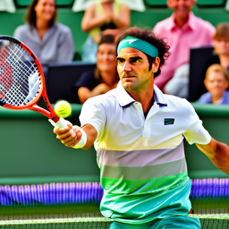
num_inference_steps = 20
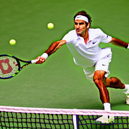
num_inference_steps = 30
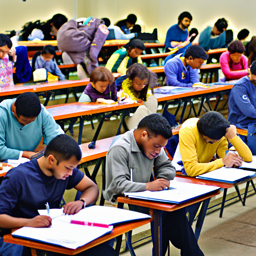
num_inference_steps = 20
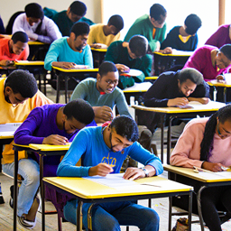
num_inference_steps = 30
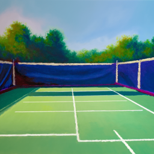
num_inference_steps = 20
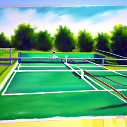
num_inference_steps = 30
These images are not perfect, but they do show that the diffusion model is able to capture some aspects of the prompts given. It seems that a higher number of inference steps leads to slightly more detailed images, but the model takes longer to run.
Part 1: Sampling Loops
Part 1.1: Implementing the Forward Process
I implemented the forward(im, t) function that takes an image and a time step t and adds noise to the image according to the diffusion model's cumulative alpha value at time t.
Here are some of the results of adding noise to the Berkeley Campanile image at different time steps:

Berkeley Campanile
Noisy Campanile (t=250)
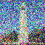
Noisy Campanile (t=500
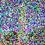
Noisy Campanile (t=750)
Here's the code I used to implement the forward process:
def forward(im, t):
with torch.no_grad():
alpha_t = alphas_cumprod[t]
epsilon = torch.randn_like(im)
im_noisy = torch.sqrt(alpha_t) * im + torch.sqrt(1 - alpha_t) * epsilon
return im_noisyPart 1.2: Classical Denoising
One classical denoising technique involves removing noise from an image by applying a Gaussian filter. Getting good results using this method is quite difficult.
For each of the 3 noisy images generated in Part 1.1, I applied Gaussian filtering with different sigma values to see how well it could denoise the images.
Here are the best results, shown side by side with the original noisy images:
Noisy Campanile (t=250)
t=250, k=5.0, sigma=1.0
Noisy Campanile (t=500)
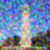
t=500, k=5.0, sigma=1.0
Noisy Campanile (t=750)
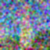
t=750, k=5.0, sigma=1.0
Obviously, these results are not very good. We improve on this in the next section using diffusion models!
Part 1.3: One-Step Denoising
Now instead, let's use a pre-trained diffusion model to denoise the images in one step. We'll use the DeepFloyd model with the text prompt "a high quality photo".
I estimated the noise in the noisy image at time step t using the diffusion model, and then removed the estimated noise from the noisy image to get the estimated original image.
I ran this model on each of the noisy images from the previous section. Here are the results, as well as their comparisons to the original and noisy images:
Original Image
Noisy Image (t=250)
Denoised Image (t=250)
Original Image
Noisy Image (t=500)
Denoised Image (t=500)
Original Image
Noisy Image (t=750)
Denoised Image (t=750)
Part 1.4: Iterative Denoising
I constructed strided_timesteps, which is a list of time steps that decrease from 990 to 0 in increments of 30.
Then, I implemented the iterative_denoise function that takes a noisy image and iteratively denoises it using the diffusion model at each time step in strided_timesteps.
In the iterative_denoise function, we start with the noisy campanile image at a timestep and progressively denoise it using the model's predictions at each timestep.
To actually do this, on the ith denoising step we want to get t' = strided_timesteps[i+1] and t = strided_timesteps[i] (from more noisy to less noisy). We can implement this using the formula:
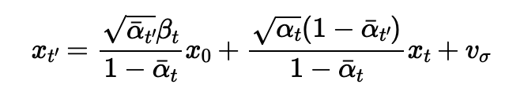
Where
- x_t is your current noisy image at time t
- x_t' is the less noisy image at time t'
- The alpha values at each time step are predetermined constants from the diffusion model
- v_sigma is random noise
Here are the results at every 5th loop in the denoising process:
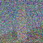
t = 690
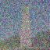
t = 540
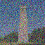
t = 390
t = 240
t = 90
The final predicted image is much better compared to the one-step denoising as well as the classical denoising from the previous parts.
Predicted Image
One-Step Denoised
Blurred Noisy Image
Part 1.5: Diffusion Model Sampling
We can use iterative_denoise to generate images from scratch! Instead of providing the noisy campanile image as input, I just provided pure noise. Here's some of the denoising results using the prompt "a high quality photo":
Generated Image 1
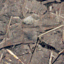
Generated Image 2
Generated Image 3
Generated Image 4
Generated Image 5
The quality of these images is not too great, but at least they're reasonable. We can improve this with CFG in the next section.
Part 1.6: Classifier-Free Guidance (CFG)
Classifier-Free Guidance (CFG) is a technique that greatly improves the quality of images at the expense of diversity. It works by computing both a conditional and unconditinoal noise estimate, and combining them using the following formula:
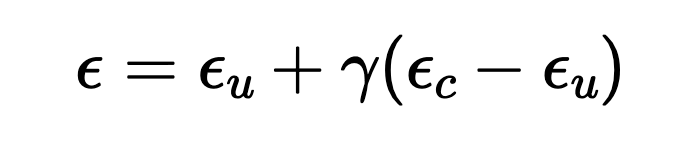
I implemented the iterative_denoise_cfg function that builds off of iterative_denoise, but adds the classifier-free guidance (CFG) technique to improve image quality.
Here are some of the denoising results using CFG with the prompt "a high quality photo" for the conditional prompt with a CFG scale of 7.0:
CFG Image 1
CFG Image 2
CFG Image 3
CFG Image 4
CFG Image 5
Part 1.7: Image-to-Image Translation
In this section, I took our original campanile image, added noise to it, and forced the diffusion model to denoise it using the CFG method from the previous section.
I used different i_start values: [1, 3, 5, 7, 10, 20] to see how the amount of noise added affects the final denoised image. Here are the results using the prompt "a high quality photo" with a CFG scale of 7.0:
i_start = 1
i_start = 3
i_start = 5
i_start = 7
i_start = 10
i_start = 20
We can see that the higher the i_start, the closer the final image is to the original campanile image. This makes sense, since a higher i_start means less noise is added to the original image, so the model has an easier time denoising it back to the original.
I tried this out with some of my own images as well:
Original Yosemite
i_start = 1
i_start = 3
i_start = 5
i_start = 7
i_start = 10
i_start = 20
Original Oxford
i_start = 1
i_start = 3
i_start = 5
i_start = 7
i_start = 10
i_start = 20
Part 1.7.1: Editing Hand-Drawn and Web Images
I also experimented with a web image and some hand-drawn images. I used the same prompt, "a high quality photo", with a CFG scale of 7.0.
Original Web Image
i_start = 1
i_start = 3
i_start = 5
i_start = 7
i_start = 10
i_start = 20
Here's my own hand-drawn image of a cat next to a river, inspired by Warrior Cats.
Original Hand-Drawn
i_start = 1
i_start = 3
i_start = 5
i_start = 7
i_start = 10
i_start = 20
Yeah, these didn't turn out too well. Here's one more hand-drawn image, and the results I got from denoising it:
Christmas Drawing
i_start = 1
i_start = 3
i_start = 5
i_start = 7
i_start = 10
i_start = 20
Part 1.7.2: Inpainting
Next, I implemented inpainting to replace a user-defined mask area in an image using the diffusion model with CFG.
I created a binary mask where the area to be inpainted is white and the rest is black.
The inpainting process works by:
- Starting from pure noise and running the iterative_denoise_cfg with scale = 7.0.
- At every iteration, we "force" the pixels outside the mask to be equal to the original image pixels, while letting the pixels inside the mask be updated by the denoising process.
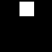
Edit Mask
Hole to Fill
Campanile Inpainted
Edit Mask
Hole to Fill
Chania Inpainted
Edit Mask
Hole to Fill
Sunset Inpainted
Part 1.7.3: Text-Conditioned Image-to-Image Translation
In this section, I guided the image diffusion model with my own text prompts to edit an image.
I used the same CFG method as before, but this time I provided new text prompts.
Campanile image with the prompt: "a city in the rain"
i_start = 1
i_start = 3
i_start = 5
i_start = 7
i_start = 10
i_start = 20
Oxford image with the prompt: "a photo of Roger Federer hitting a forehand on a grass tennis court"
i_start = 1
i_start = 3
i_start = 5
i_start = 7
i_start = 10
i_start = 20
Yosemite image with the prompt: "a sunset over a beautiful tsunami"
i_start = 1
i_start = 3
i_start = 5
i_start = 7
i_start = 10
i_start = 20
Part 1.8: Visual Anagrams
In this section, I created visual anagrams that look like different images when you flip them upside down. To achieve this, at each time step we have to:
- Run the CFG denoiser twice, once on each prompt and keep their noise estimates
- For the second prompt, flip the image upside down before running CFG denoising
- Unflip the image and average the two noise estimates, using the resulting image
I ran this process and created several visual anagrams. The first one uses the prompts:
- Prompt 1: "an oil painting of an old man"
- Prompt 2: "an oil painting of people around a campfire"
Old Man
People Around Campfire
The second visual anagram uses the prompts:
- Prompt 1: "a squirrel eating an acorn"
- Prompt 2: "a christmas tree"
Squirrel Eating Acorn
Christmas Tree
Finally, the third visual anagram uses the prompts:
- Prompt 1: "a photo of a tyrannosaurus rex"
- Prompt 2: "a mountain over a lake"
Tyrannosaurus Rex
Mountain Over Lake
Part 1.9: Hybrid Images
Finally, let's create some hybrid images with factorized diffusion. Hybrid images combine the low-frequency components of one image with the high-frequency components of another image. The high-frequency component is visible when viewed up close, while the low-frequency component is visible when viewed from a distance.
The technique is similar to the one in the previous section. We will create a composite noise estimate epsilon, by estimating the noise with two different text prompts, and then combining low frequencies from one noise estimate with high frequencies of the other. The algorithm is:
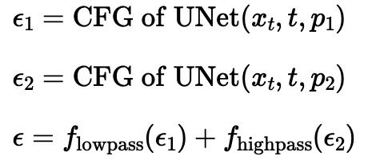
Hybrid Image Formula
My first hybrid image uses the prompts:
- Prompt 1: "a unicorn" (high-pass)
- Prompt 2: "a beautiful sunset over a tsunami" (low-pass)
Unicorn + Sunset Hybrid
My second hybrid image uses the prompts:
- Prompt 1: "a castle" (high-pass)
- Prompt 2: "a mountain over a lake" (low-pass)
Castle + Mountain Hybrid